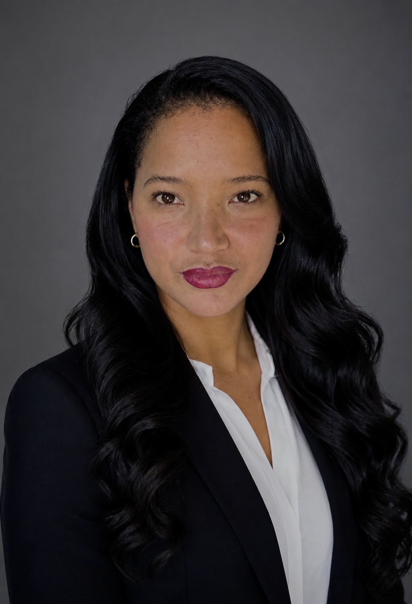

Software Engineering / Full-Stack Web Development
HyperionDev
Currently developing practical skills in web development, programming and software engineering.

Aspiring Full-Stack Web Developer
I am a motivated and hardworking professional who enjoys learning, developing new skills and taking on new challenges. I have experience working with people, managing responsibilities and communicating effectively in a professional environment.
I am currently developing my skills in software and web development, with a particular interest in creating practical, user-friendly websites and applications. I enjoy solving problems and learning how technology can be used to create useful solutions.
My goal is to build a successful career in the technology industry, continue developing my programming skills and gain practical experience as a full-stack developer.
Name: Raquel Andrea van Eyck
Email: your-raquel@gmail.com
Phone: 013 125 152 6
LinkedIn: LinkedIn Profile
HyperionDev
Currently developing practical skills in web development, programming and software engineering.
Business Management
Accountancy
2021 - Present
Previous Experience
My goal is to transition into the technology industry and establish myself as a skilled software developer. I aim to continue improving my knowledge of programming, web development and modern software technologies while gaining practical industry experience.